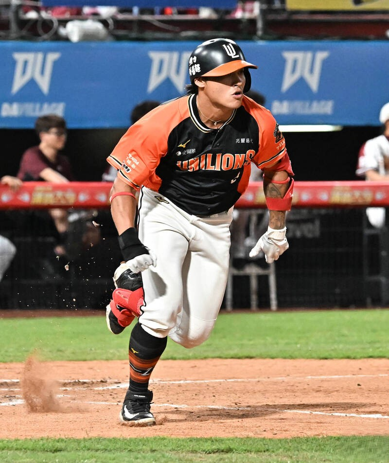

首頁
球隊沿革
猛獅戰隊
應援專區
萊恩酷
售票資訊

6
李承齡 #6
Li Cheng-Ling
守備位置
外野手 (Outfielder)
投 / 打
右投 / 右打
身高 / 體重
176 cm / 84 kg
出生日期
2000 / 08 / 08
學歷
加盟年份
2018年
🦁 選手介紹
李承齡，高中時期原本是強肩捕手，進入職棒後為了發揮打擊優勢轉任外野手。擁有優異的身體素質與爆發力，曾被教練團視為未來中心打者的潛力股。
在二軍磨練多時，升上一軍後曾展現不錯的長打能力與雷射肩守備。
⚾️ 查看中職官網數據